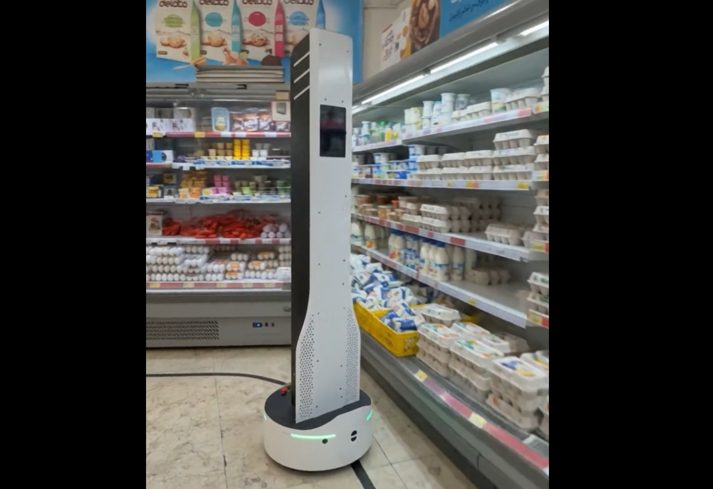

خودروی خودران در مقیاس ۱:۱۰
همکاری دانشگاه و صنعت (مرکز تحقیق و توسعهٔ همراه اول)
توسعهٔ خودروی خودران در مقیاس ۱:۱۰ با تشخیص خطوط و اشیا مبتنی بر شبکهٔ عصبی کانولوشنی، شناسایی ۵۰ علامت راهنمایی و رانندگی، کنترل عرضی و طولی، مسافتسنجی بر پایهٔ مدل حرکت و پارک خودکار موازی و عمودی.

ربات پایش موجودی
گروه صنعتی گلرنگ
طراحی و ساخت رباتی با محرک تفاضلی برای پایش موجودی فروشگاهها، با قابلیت حرکت بین قفسهها، خواندن بارکد و تشخیص کالاها.

سامانهٔ خانهٔ هوشمند
پروژهٔ پایانی کارشناسی
ساخت نمونهٔ کوچک یک خانهٔ هوشمند با برد سفارشی مبتنی بر ESP32، حسگرها و عملگرها، بههمراه برنامهٔ موبایل. مسئولیت اصلی من طراحی برد و برنامهنویسی نرمافزار نهفته بود.